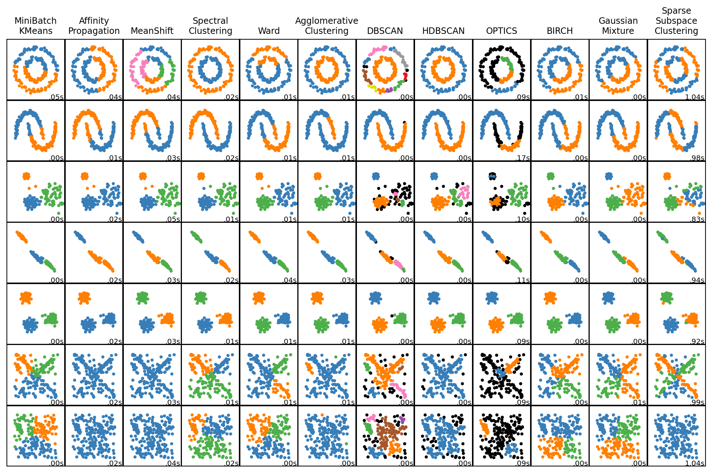

Scatterplot matrix code by sklearn
# Directly taken from:
# https://scikit-learn.org/stable/auto_examples/cluster/plot_cluster_comparison.html
import time
import warnings
from itertools import cycle, islice
import matplotlib.pyplot as plt
import numpy as np
from sklearn import cluster, datasets, mixture
from sklearn.neighbors import kneighbors_graph
from sklearn.preprocessing import StandardScaler
from ssc import linear, SparseSubspaceClustering
# ============
# Generate datasets. We choose the size big enough to see the scalability
# of the algorithms, but not too big to avoid too long running times
# ============
n_samples = 200
seed = 5805
noisy_circles = datasets.make_circles(
n_samples=n_samples, factor=0.5, noise=0.05, random_state=seed
)
noisy_moons = datasets.make_moons(n_samples=n_samples, noise=0.05, random_state=seed)
blobs = datasets.make_blobs(n_samples=n_samples, random_state=seed)
rng = np.random.RandomState(seed)
no_structure = rng.rand(n_samples, 2), None
# Anisotropicly distributed data
random_state = 5805
X, y = datasets.make_blobs(n_samples=n_samples, random_state=random_state)
transformation = [[0.6, -0.6], [-0.4, 0.8]]
X_aniso = np.dot(X, transformation)
aniso = (X_aniso, y)
# blobs with varied variances
varied = datasets.make_blobs(
n_samples=n_samples, cluster_std=[1.0, 2.5, 0.5], random_state=random_state
)
# ============
# Set up cluster parameters
# ============
plt.figure(figsize=(10.5, 6.5))
plt.subplots_adjust(
left=0.02, right=0.98, bottom=0.001, top=0.95, wspace=0.01, hspace=0.01
)
plot_num = 1
default_base = {
"quantile": 0.3,
"eps": 0.3,
"damping": 0.9,
"preference": -200,
"n_neighbors": 3,
"n_clusters": 3,
"min_samples": 7,
"xi": 0.05,
"min_cluster_size": 0.1,
"allow_single_cluster": True,
"hdbscan_min_cluster_size": 15,
"hdbscan_min_samples": 3,
"random_state": 42,
}
datasets = [
(
noisy_circles,
{
"damping": 0.77,
"preference": -240,
"quantile": 0.2,
"n_clusters": 2,
"min_samples": 7,
"xi": 0.08,
},
),
(
noisy_moons,
{
"damping": 0.75,
"preference": -220,
"n_clusters": 2,
"min_samples": 7,
"xi": 0.1,
},
),
(
varied,
{
"eps": 0.18,
"n_neighbors": 2,
"min_samples": 7,
"xi": 0.01,
"min_cluster_size": 0.2,
},
),
(
aniso,
{
"eps": 0.15,
"n_neighbors": 2,
"min_samples": 7,
"xi": 0.1,
"min_cluster_size": 0.2,
},
),
(blobs, {"min_samples": 7, "xi": 0.1, "min_cluster_size": 0.2}),
(linear, {}),
(no_structure, {}),
]
for i_dataset, (dataset, algo_params) in enumerate(datasets):
# update parameters with dataset-specific values
params = default_base.copy()
params.update(algo_params)
X, y = dataset
# normalize dataset for easier parameter selection
X = StandardScaler().fit_transform(X)
# estimate bandwidth for mean shift
bandwidth = cluster.estimate_bandwidth(X, quantile=params["quantile"])
# connectivity matrix for structured Ward
connectivity = kneighbors_graph(
X, n_neighbors=params["n_neighbors"], include_self=False
)
# make connectivity symmetric
connectivity = 0.5 * (connectivity + connectivity.T)
# ============
# Create cluster objects
# ============
ms = cluster.MeanShift(bandwidth=bandwidth, bin_seeding=True)
two_means = cluster.MiniBatchKMeans(
n_clusters=params["n_clusters"],
n_init="auto",
random_state=params["random_state"],
)
ward = cluster.AgglomerativeClustering(
n_clusters=params["n_clusters"], linkage="ward", connectivity=connectivity
)
spectral = cluster.SpectralClustering(
n_clusters=params["n_clusters"],
eigen_solver="arpack",
affinity="nearest_neighbors",
random_state=params["random_state"],
)
dbscan = cluster.DBSCAN(eps=params["eps"])
hdbscan = cluster.HDBSCAN(
min_samples=params["hdbscan_min_samples"],
min_cluster_size=params["hdbscan_min_cluster_size"],
allow_single_cluster=params["allow_single_cluster"],
)
optics = cluster.OPTICS(
min_samples=params["min_samples"],
xi=params["xi"],
min_cluster_size=params["min_cluster_size"],
)
affinity_propagation = cluster.AffinityPropagation(
damping=params["damping"],
preference=params["preference"],
random_state=params["random_state"],
)
average_linkage = cluster.AgglomerativeClustering(
linkage="average",
metric="cityblock",
n_clusters=params["n_clusters"],
connectivity=connectivity,
)
birch = cluster.Birch(n_clusters=params["n_clusters"])
gmm = mixture.GaussianMixture(
n_components=params["n_clusters"],
covariance_type="full",
random_state=params["random_state"],
)
ssc = SparseSubspaceClustering(
n_clusters=params["n_clusters"],
)
clustering_algorithms = (
("MiniBatch\nKMeans", two_means),
("Affinity\nPropagation", affinity_propagation),
("MeanShift", ms),
("Spectral\nClustering", spectral),
("Ward", ward),
("Agglomerative\nClustering", average_linkage),
("DBSCAN", dbscan),
("HDBSCAN", hdbscan),
("OPTICS", optics),
("BIRCH", birch),
("Gaussian\nMixture", gmm),
("Sparse\nSubspace\nClustering", ssc),
)
for name, algorithm in clustering_algorithms:
t0 = time.time()
# catch warnings related to kneighbors_graph, subspace clustering
with warnings.catch_warnings():
warnings.filterwarnings(
"ignore",
message="the number of connected components of the "
+ "connectivity matrix is [0-9]{1,2}"
+ " > 1. Completing it to avoid stopping the tree early.",
category=UserWarning,
)
warnings.filterwarnings(
"ignore",
message="Graph is not fully connected, spectral embedding"
+ " may not work as expected.",
category=UserWarning,
)
warnings.filterwarnings(
"ignore",
message="Solution may be inaccurate. Try another solver,"
+ " adjusting the solver settings, or solve with"
+ " verbose=True for more information.",
category=UserWarning,
)
algorithm.fit(X)
t1 = time.time()
if hasattr(algorithm, "labels_"):
y_pred = algorithm.labels_.astype(int)
else:
y_pred = algorithm.predict(X)
plt.subplot(len(datasets), len(clustering_algorithms), plot_num)
if i_dataset == 0:
plt.title(name, size=9)
colors = np.array(
list(
islice(
cycle(
[
"#377eb8",
"#ff7f00",
"#4daf4a",
"#f781bf",
"#a65628",
"#984ea3",
"#999999",
"#e41a1c",
"#dede00",
]
),
int(max(y_pred) + 1),
)
)
)
# add black color for outliers (if any)
colors = np.append(colors, ["#000000"])
plt.scatter(X[:, 0], X[:, 1], s=5, color=colors[y_pred])
plt.xlim(-2.5, 2.5)
plt.ylim(-2.5, 2.5)
plt.xticks(())
plt.yticks(())
plt.text(
0.99,
0.01,
("%.2fs" % (t1 - t0)).lstrip("0"),
transform=plt.gca().transAxes,
size=7.5,
horizontalalignment="right",
)
plot_num += 1
plt.show()